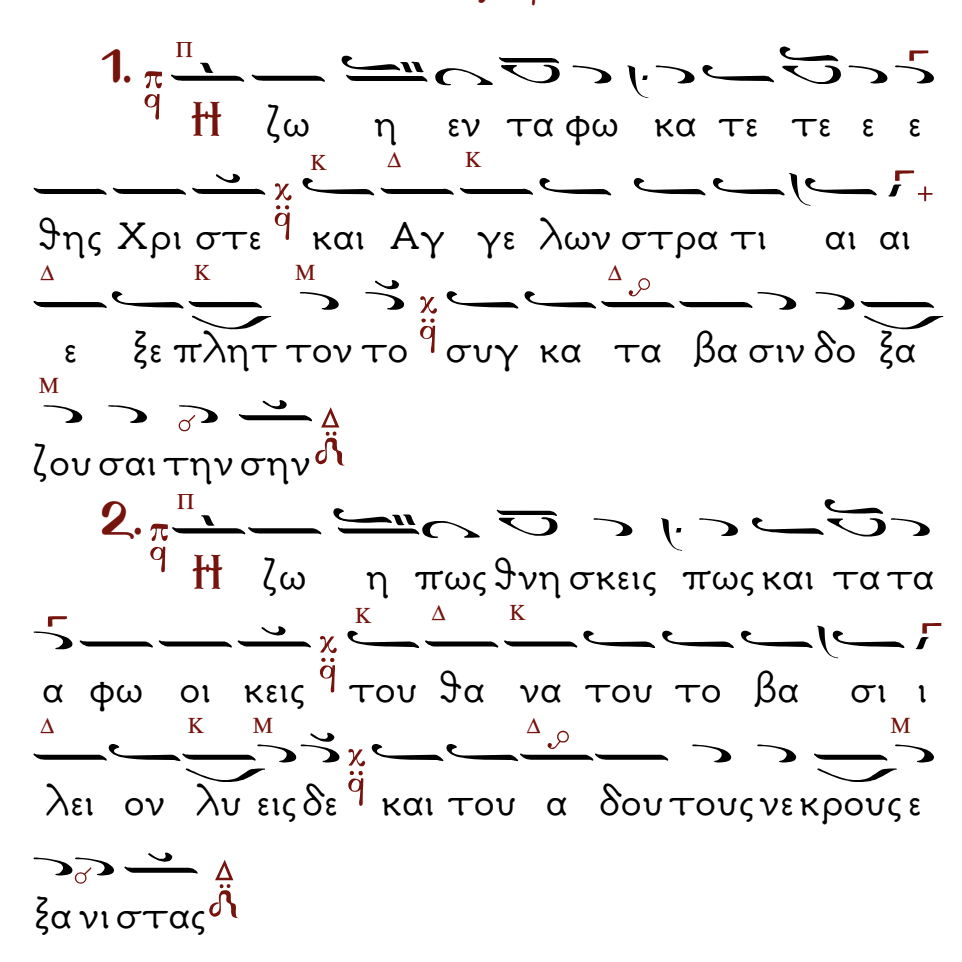
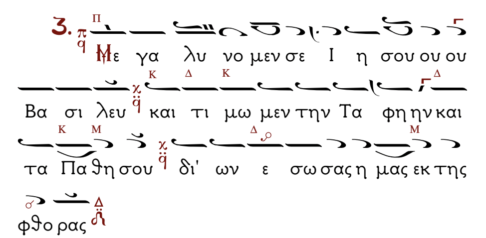

Three Lamentations (from Good Friday, Ἐπιτάφιος Θρῆνος)
 Ἡ ζωὴ ἐν τάφῷ κατετέθης, Χριστέ,
Καὶ ἀγγέλων στρατιαὶ ἐξεπλήττοντο,
Συγκατάβασιν δοξάζουσαι τὴν σήν.
Ἡ ζωὴ πῶς θνήσκεις;
Πῶς καὶ τάφῳ οἰκεῖς;
Τοῦ θανάτου τὸ βασίλειον λύεις δέ
καὶ τοῦ Ἄδου τοὺς νεκροὺς ἐξανιστᾶς.
Μεγαλύνομέν σε,
Ἰησού Βασιλεύ,
καὶ τιμῶμεν τὴν ταφὴν καὶ τὰ πάθη σου,
δι’ ὧν ἔσωσας ἡμὰς ἐκ τῆς φθορᾶς.